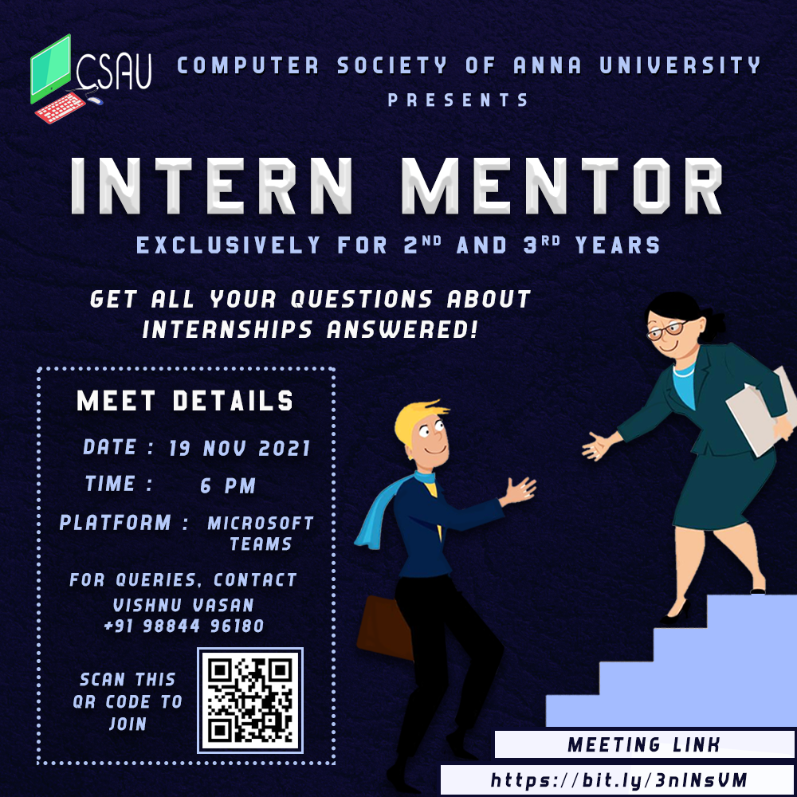

OUR EVENTS
INTERN MENTOR-II
The second session in CSAU's Intern Mentor series was specially curated to guide students through the various stages and steps involved in securing an internship. It was a detailed discussion of the A-Z process of acquiring internships and scholarships, both on and off the campus. A lot of aspiring 2nd and 3rd year students marked their presence for a fully interactive session to get all their doubts clarified.
CASCADING INTO UI/UX AND FIGMA
Good UI/UX design is undoubtedly what catches the eyes of a user and is often the main selling point of products. It ensures easy navigability, pleasing aesthetics, and is a user’s gateway to using any application. Taking a leap from the backend to the front end, CSAU conducted “Cascading into UI/UX and Figma”, where the participants witnessed an interactive session exploring the in and outs of this powerful designing tool. Having brought their laptops the participants were also guided through a complete hands on experience, gaining a thorough practical knowledge of the topic.
DOOR TO OPEN SOURCE - WINDOW OF OPPORTUNITIES
Being the 3rd interactive session of the "Door to Open Source" series by CSAU, this event focused on all the open source programs that are out there. After familiarizing themselves with GIT and making their first few open source contributions, the participants were explained the various applications of open source contributions, how much of a valuable resource it serves to be in their career, and where they can reap the benefits of this highly fruitful skill.
DOOR TO OPEN SOURCE - GITTING IT RIGHT COMMIT #2
This was the 2nd session on CSAU's dive into elucidating the Open source domain. Participants were walked through making open source contributions, and were familiarized with Git.
DOOR TO OPEN SOURCE - GITTING IT RIGHT
Door To Open Source is CSAU's first of its kind deep dive into Open Source, where a whole new domain was introduced to everyone wondering what roles in tech are safe during the ongoing layoffs, demystifying remote working, and exploring a potential career path of all participants looking for roles that do not require DSA.
MERN SESSION 5: INTRO TO MONGODB
This session was the 5th in row of our MERN series which gave a start on MongoDB and continued with the Live Coding of the Social Media Web Application and connecting with the database.
HACKER INSTINCT - A VENTURE INTO CYBERSPACE
CSAU organized a Cybersecurity Seminar where industry experts detailed on SQL Injection attacks and many more topics deeper into the cyber-space. The seminar also focused on penetration testing and facilitates a chance to consider options for a career in Penetration Testing and Cybersecurity.

HANDS ON WITH MERN
An interactive live coding session in which participants gain knowledge of the MERN stack by developing a social media application from scratch by understanding the basics and key concepts of React, Express, MongoDB and NodeJs. It consisted of various sessions that addressed each technology in the stack.
RESUME REWIND
Resume Rewind is an interactive session conducted by CSAU with Ms. Akhila Padmanaban, an alumna of CEG, who is a Software Engineer at Visa. The session was mainly focussed for third and fourth year students who went through their internship/placements drive. The speaker covered all the important pointers, technologies and skills that have to be included and what NOT to include in a resume to make a resume more professional.
POP TECH QUIZ
CSAU conducted a pop tech quiz event during Techofes 2022 which involved participants across colleges from south india. It consisted of two rounds, where the first round consisted of multiple choice questions involving topics from various pop cultures. The next round was a buzzer round, where shortlisted teams had to answer first to get full points.
ABACUS WEB DESIGN
The event was hosted in the premier symposium of the Computer Science Department's ABACUS. The event was a challenge to convert a webpage design given to them into an actual webpage via code for the preliminary round. In the second round, the filtered participants tried to code another page to match with the themes given in the initial round. The event attracted around 300+ participants divided into 60+ teams.
BLOCKCHAIN 101
Blockchain 101 is a free and open-for-all introductory session conducted by CSAU in collaboration with YBlockChain, a global blockchain community. The session briefed on the Development of Web over the years, about Blockchain, and demystified this billion dollar industry that has taken the future of technology by storm. Other topics like NFT’s, Use cases of NFT’s and many more insights were discussed. This event also had a Q&A session where-in the students interacted with the presenter to know more intricacies about this vividly developing technology.
AI INCEPTION: INTRO TO THE WORLD OF AI
This event was conducted for spreading the knowledge of AI to all the students irrespective of the department. Various topics like types of machine learning, different input data type, regression, classification, and a few performance metrics were introduced. Participants were explained how the Recommendation system and Image caption generator work. Hands-on training was given on Preprocessing, Exploratory Data Analysis, applying ML algorithms, and evaluating the model.
INTERN MENTOR
The second edition of Intern Mentor conducted by CSAU acted as an interactive and engaging session. The main motto of this event is to help students aim for, and secure internships, scholarships and more opportunities. This session provided a platform for the students to interact with their seniors and get insights through their experience on what is an internship, how to apply and prepare for the same. Seniors addressed the crowd by explaining everything in detail, gave suggestions and cleared all the doubts posed by the students.
copyright 2023 CSAU